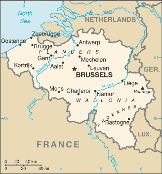

Genel Bilgiler
Belçika, Batı Avrupa’da yer alan federal bir parlamenter cumhuriyettir. Başkenti Brüksel’dir. Yaklaşık 11,5 milyon nüfusa sahiptir. Resmî dilleri Felemenkçe, Fransızca ve Almancadır. Para birimi Euro’dur. Belçika Avrupa Birliği ve NATO üyesidir ve Avrupa kurumlarının merkezi olarak önemli bir diplomatik role sahiptir.
Belçika, kuzeyde Hollanda, doğuda Almanya ve Lüksemburg, güney ve batıda Fransa ile çevrilidir. Yüzölçümü yaklaşık 30.528 km²’dir. Ülke coğrafyası kuzeyde düzlükler, güneyde Ardenler adı verilen ormanlık ve dağlık bölgelerden oluşur. Ülkenin en önemli nehirleri Meuse ve Scheldt’tir.
Başkent: Brüksel
Kıta: Avrupa
Yüzölçümü: 30.528 km²
Nüfus (2025): 11.632.000

Bayrak Anlamı: Belçika bayrağı dikey üç eşit şeritten oluşur: siyah, sarı ve kırmızı. Siyah gücü ve kararlılığı, sarı refahı ve zenginliği, kırmızı ise cesareti ve bağımsızlık mücadelesini simgeler. Bayrak 1831 yılında kabul edilmiş olup, Belçika’nın ulusal kimliğinin sembolüdür.
Belçika Haritası
Ekonomi
Belçika ekonomisi yüksek gelirli ve çeşitlenmiş bir yapıya sahiptir. Sanayi, hizmet ve tarım sektörleri önemli rol oynar. Sanayi alanında kimya, otomotiv, gıda işleme ve makine sektörleri öne çıkar. Hizmet sektörü özellikle finans, lojistik ve turizm alanlarında gelişmiştir. Tarımda başlıca ürünler buğday, arpa, mısır ve süt ürünleridir.
| Yıl | İhracat (Milyar $) | İthalat (Milyar $) |
|---|---|---|
| 2019 | 450 | 460 |
| 2020 | 430 | 440 |
| 2021 | 480 | 490 |
| 2022 | 500 | 510 |
| 2023 | 505 | 515 |